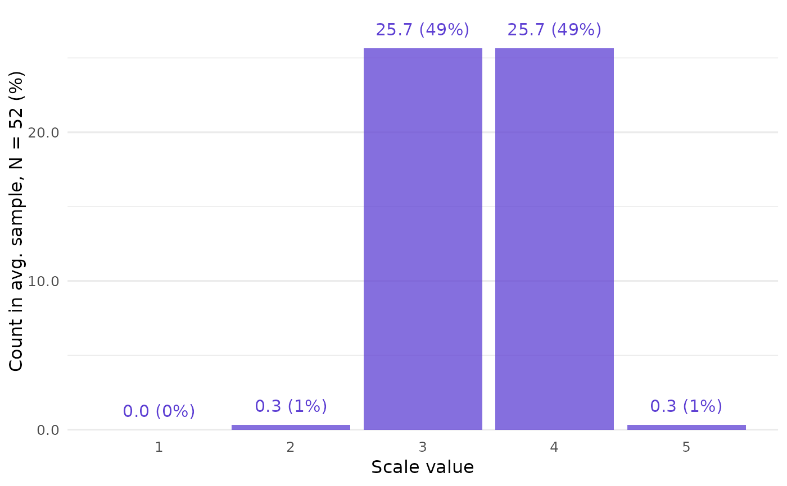
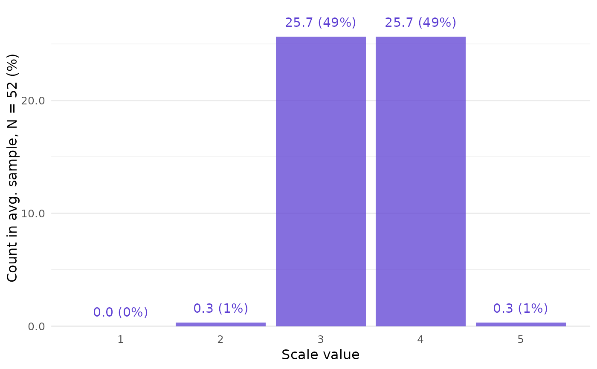

Call closure_combine() to run the CLOSURE algorithm on a given
set of summary statistics.
This can take seconds, minutes, or longer, depending on the input. Wide
variance and large samples often lead to many combinations, i.e., long
runtimes. These effects interact dynamically. For example, with large n,
even very small increases in sd can greatly increase runtime and number
of values found.
If the inputs are mutually inconsistent, there is a warning and an empty data frame.
Usage
closure_combine(
mean,
sd,
n,
scale_min,
scale_max,
rounding = "up_or_down",
threshold = 5,
warn_if_empty = TRUE,
rounding_error_mean = NULL,
rounding_error_sd = NULL
)Arguments
- mean
String (length 1). Reported mean.
- sd
String (length 1). Reported sample standard deviation.
- n
Numeric (length 1). Reported sample size.
- scale_min, scale_max
Numeric (length 1 each). Minimal and maximal possible values of the measurement scale (not the empirical min and max!). For example, with a 1-7 Likert scale, use
scale_min = 1andscale_max = 7.- rounding
String (length 1). Rounding method assumed to have created
meanandsd. See Rounding options, but also the Rounding limitations section below. Default is"up_or_down"which, e.g., unrounds0.12to0.115as a lower bound and0.125as an upper bound.- threshold
Numeric (length 1). Number from which to round up or down, if
roundingis any of"up_or_down","up", and"down". Default is5.- warn_if_empty
Logical (length 1). Should a warning be shown if no combinations are found? Default is
TRUE.
Value
Named list of four tibbles (data frames):
inputs: Arguments to this function.metrics:combos_initial: integer. The basis for computing CLOSURE results, based on scale range only. Seeclosure_count_initial().combos_all: integer. Number of all combinations. Equal to the number of rows inresults.values_all: integer. Number of all individual values found. Equal ton * combos_all.horns: double. Measure of dispersion for bounded scales; seehorns().horns_uniform: double. Valuehornswould have if the reconstructed sample was uniformly distributed.
frequency:value: integer. Scale values derived fromscale_minandscale_max.f_average: Count of scale values in the meanresultscombination.f_absolute: integer. Count of individual scale values found in theresultscombinations.f_relative: double. Values' share of total values found.
results:id: integer. Runs from1tocombos_all.combination: list of integer vectors. Each of these vectors has lengthn. It is a combination (or distribution) of individual scale values found by CLOSURE.
Rounding limitations
The rounding and threshold arguments are
not fully implemented. For example, CLOSURE currently treats all rounding
bounds as inclusive, even if the rounding specification would imply
otherwise.
Many specifications of the two arguments will not make any difference, and those that do will most likely lead to empty results.
Examples
# High spread often leads to many combinations --
# here, 735.
data_high <- closure_combine(
mean = "3.5",
sd = "2",
n = 52,
scale_min = 1,
scale_max = 5
)
data_high
#> $inputs
#> # A tibble: 1 × 5
#> mean sd n scale_min scale_max
#> <chr> <chr> <dbl> <dbl> <dbl>
#> 1 3.5 2 52 1 5
#>
#> $metrics
#> # A tibble: 1 × 5
#> combos_initial combos_all values_all horns horns_uniform
#> <int> <int> <int> <dbl> <dbl>
#> 1 15 3682 191464 0.651 0.5
#>
#> $frequency
#> # A tibble: 5 × 4
#> value f_average f_absolute f_relative
#> <int> <dbl> <int> <dbl>
#> 1 1 10.4 38308 0.200
#> 2 2 6.67 24561 0.128
#> 3 3 4.88 17983 0.0939
#> 4 4 6.67 24569 0.128
#> 5 5 23.4 86043 0.449
#>
#> $results
#> # A tibble: 3,682 × 2
#> id combination
#> <int> <list>
#> 1 1 <int [52]>
#> 2 2 <int [52]>
#> 3 3 <int [52]>
#> 4 4 <int [52]>
#> 5 5 <int [52]>
#> 6 6 <int [52]>
#> 7 7 <int [52]>
#> 8 8 <int [52]>
#> 9 9 <int [52]>
#> 10 10 <int [52]>
#> # ℹ 3,672 more rows
#>
# Get a clear picture of the distribution
# by following up with `closure_plot_bar()`:
closure_plot_bar(data_high)
 # Low spread, only 3 combinations, and not all
# scale values are possible.
data_low <- closure_combine(
mean = "3.5",
sd = "0.5",
n = 52,
scale_min = 1,
scale_max = 5
)
data_low
#> $inputs
#> # A tibble: 1 × 5
#> mean sd n scale_min scale_max
#> <chr> <chr> <dbl> <dbl> <dbl>
#> 1 3.5 0.5 52 1 5
#>
#> $metrics
#> # A tibble: 1 × 5
#> combos_initial combos_all values_all horns horns_uniform
#> <int> <int> <int> <dbl> <dbl>
#> 1 15 15 780 0.0689 0.5
#>
#> $frequency
#> # A tibble: 5 × 4
#> value f_average f_absolute f_relative
#> <int> <dbl> <int> <dbl>
#> 1 1 0 0 0
#> 2 2 0.333 5 0.00641
#> 3 3 25.7 385 0.494
#> 4 4 25.7 385 0.494
#> 5 5 0.333 5 0.00641
#>
#> $results
#> # A tibble: 15 × 2
#> id combination
#> <int> <list>
#> 1 1 <int [52]>
#> 2 2 <int [52]>
#> 3 3 <int [52]>
#> 4 4 <int [52]>
#> 5 5 <int [52]>
#> 6 6 <int [52]>
#> 7 7 <int [52]>
#> 8 8 <int [52]>
#> 9 9 <int [52]>
#> 10 10 <int [52]>
#> 11 11 <int [52]>
#> 12 12 <int [52]>
#> 13 13 <int [52]>
#> 14 14 <int [52]>
#> 15 15 <int [52]>
#>
# This can also be shown by `closure_plot_bar()`:
closure_plot_bar(data_low)

# Low spread, only 3 combinations, and not all
# scale values are possible.
data_low <- closure_combine(
mean = "3.5",
sd = "0.5",
n = 52,
scale_min = 1,
scale_max = 5
)
data_low
#> $inputs
#> # A tibble: 1 × 5
#> mean sd n scale_min scale_max
#> <chr> <chr> <dbl> <dbl> <dbl>
#> 1 3.5 0.5 52 1 5
#>
#> $metrics
#> # A tibble: 1 × 5
#> combos_initial combos_all values_all horns horns_uniform
#> <int> <int> <int> <dbl> <dbl>
#> 1 15 15 780 0.0689 0.5
#>
#> $frequency
#> # A tibble: 5 × 4
#> value f_average f_absolute f_relative
#> <int> <dbl> <int> <dbl>
#> 1 1 0 0 0
#> 2 2 0.333 5 0.00641
#> 3 3 25.7 385 0.494
#> 4 4 25.7 385 0.494
#> 5 5 0.333 5 0.00641
#>
#> $results
#> # A tibble: 15 × 2
#> id combination
#> <int> <list>
#> 1 1 <int [52]>
#> 2 2 <int [52]>
#> 3 3 <int [52]>
#> 4 4 <int [52]>
#> 5 5 <int [52]>
#> 6 6 <int [52]>
#> 7 7 <int [52]>
#> 8 8 <int [52]>
#> 9 9 <int [52]>
#> 10 10 <int [52]>
#> 11 11 <int [52]>
#> 12 12 <int [52]>
#> 13 13 <int [52]>
#> 14 14 <int [52]>
#> 15 15 <int [52]>
#>
# This can also be shown by `closure_plot_bar()`:
closure_plot_bar(data_low)
